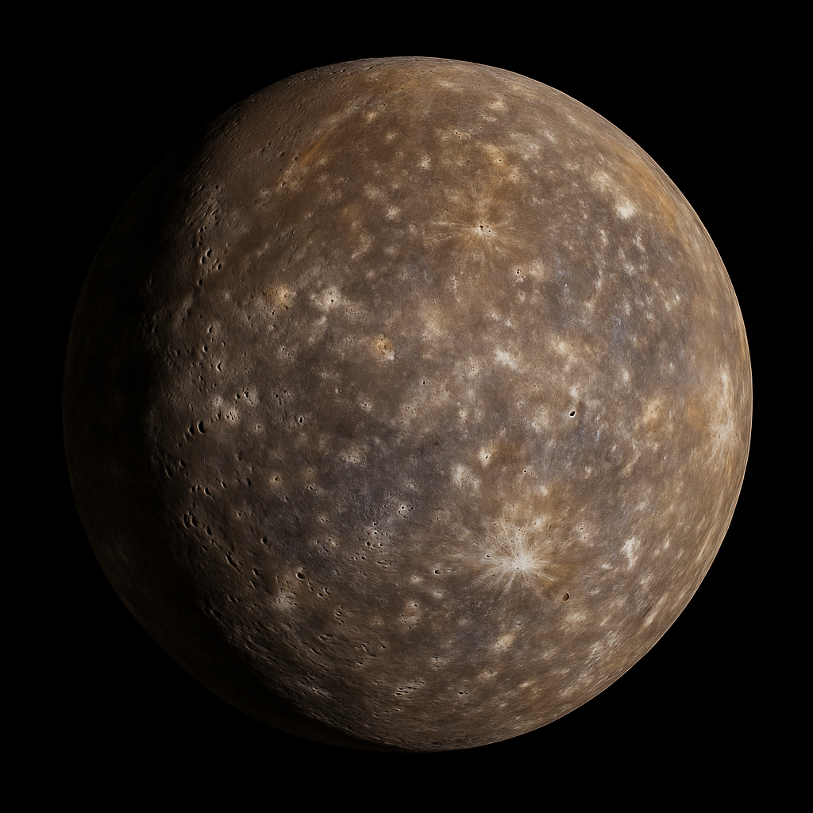
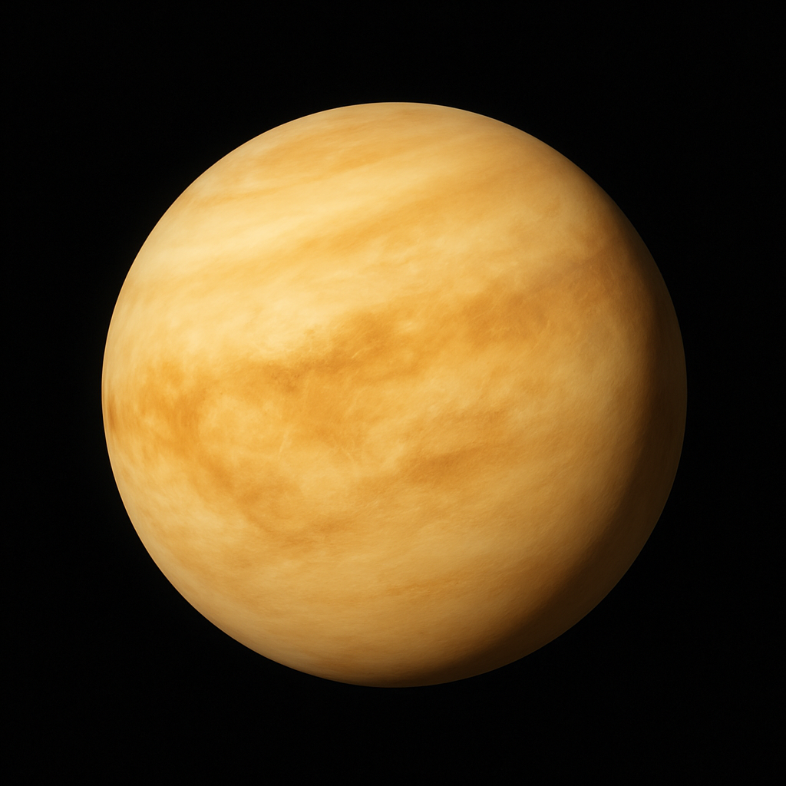
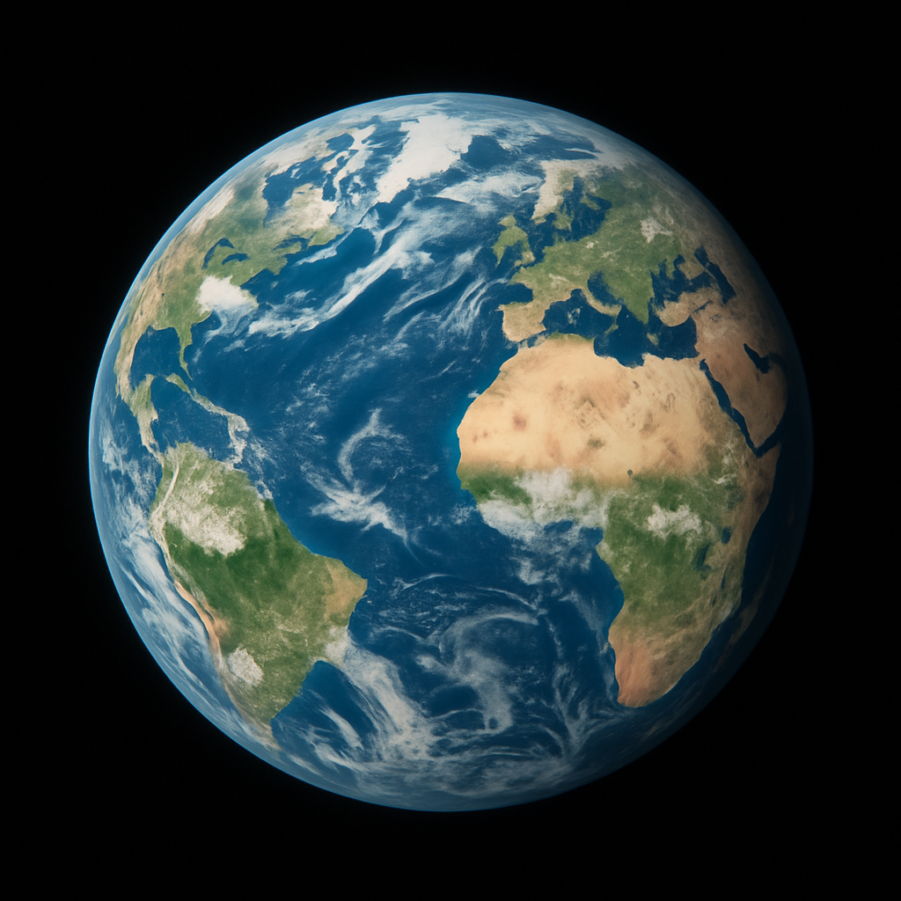
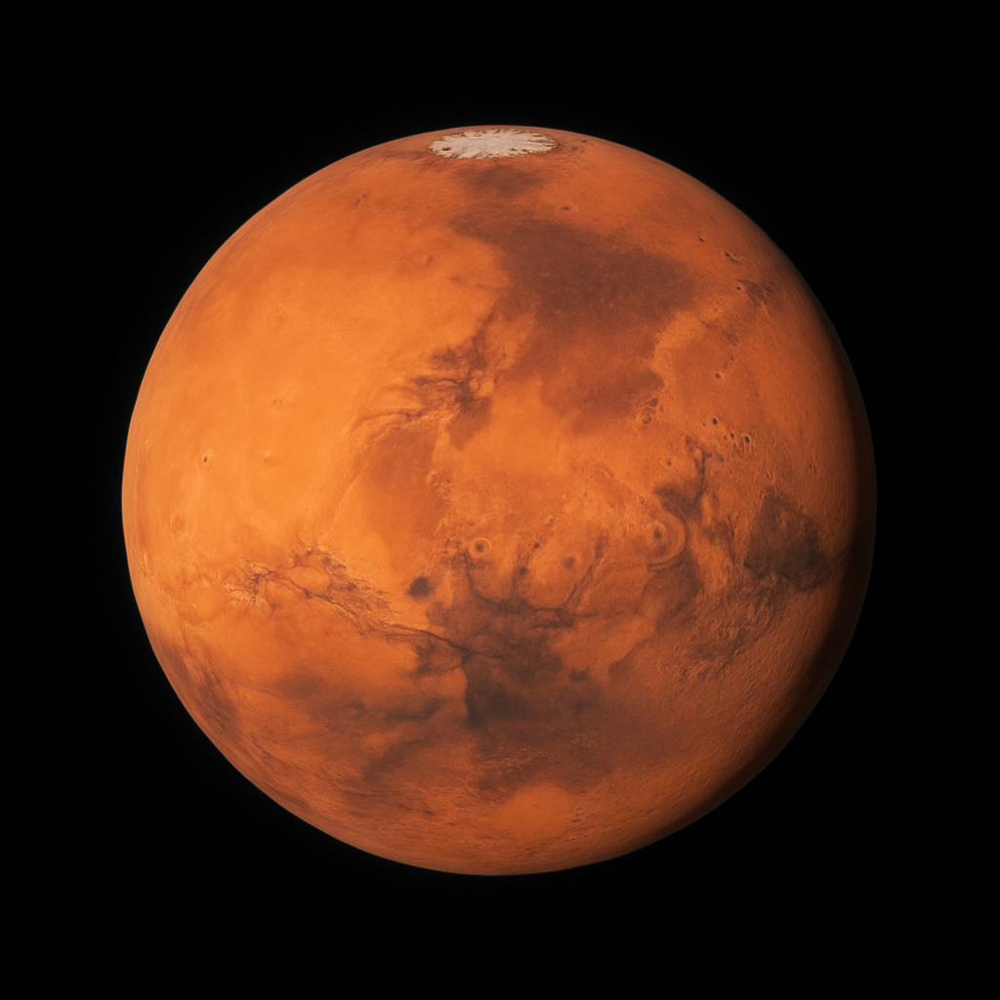

| Mercury | Venus | Earth | Mars | |
|---|---|---|---|---|
| Images |  |  |  |  |
| Diameter | 4,879 km | 12,104 km | 12,756 km | 6,792 km |
| Mass | 0.330 × 10²⁴ kg | 4.87 × 10²⁴ kg | 5.97 × 10²⁴ kg | 0.642 × 10²⁴ kg |
| How many Moons | 0 | 0 | 1 | 2 |
| Orbital period | 88 earth days | 225 earth days | 365 earth days | 687 earth days |
| Surface gravity | 3.7 m/s² | 8.87 m/s² | 9.8 m/s² | 3.7 m/s² |
| Distance from Sun | 57.9 million km | 108.2 million km | 149.6 million km | 227.9 million km |
| Average temperature | 167°C | 464°C | 15°C | -45°C |
welcome